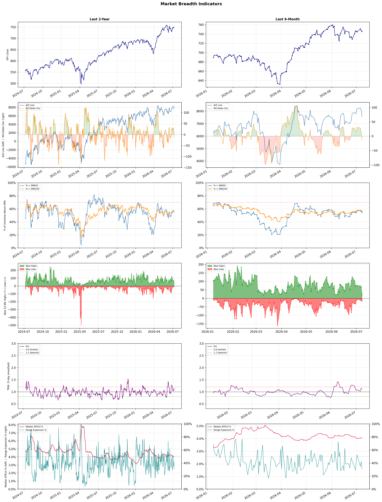

A daily market breadth and sector rotation report for active investors
| Item | Read |
|---|---|
| Regime | Selective Risk-On |
| Risk posture | Selective |
| Universe | 1,344 stocks tracked · 22 new 52-week highs · 30 active swing setups |
| Breadth | 54.1% of tracked stocks are above SMA50 — neutral range, new highs exceed new lows (22 vs 16), McClellan oscillator (breadth momentum) is negative at -15.2 |
| Leadership | Biotechnology, REIT - Hotel & Motel, and Airlines |
| Weakest groups | Uranium, Copper, and Gold |
Use this report to prioritize research and chart review; validate entries, stops, liquidity, earnings, and risk before acting.
| Item | Read |
|---|---|
| Primary read | Selective Risk-On regime with Selective risk posture. |
| Research queue | ABSI, SLS, QURE, DFTX, RARE |
| Leadership focus | Biotechnology, REIT - Hotel & Motel, and Airlines |
| Caution list | Uranium, Copper, and Gold |
| Review prompt | Check extension risk, chart location, fundamentals, valuation, and earnings before using any research row. |
| Item | Read |
|---|---|
| Primary read | 2 active risk warnings; use screen output as watchlist input only. |
| Bullish screens | EWTX, NUVL, RPRX, SGHC, NET |
| Bearish screens | WRD, OLLI, SLDP, ABR, SMR |
| Alerts / levels | Automated trigger, stop, ATR, liquidity, reward/risk, and event-risk levels are pending future enrichment. |
| Review prompt | Open the linked chart, define trigger and invalidation, then check liquidity and event risk independently. |
Risk Posture: Selective — screen backdrop supports selective research in leading industries
Metric context: McClellan below -50 = elevated selling pressure; below -100 = washout territory. Range Expansion = share of stocks with daily range above their 20-day average. Signal Density = share of tracked names appearing in signal screens.
| Breadth Date | % > SMA50 | % > SMA200 | New Highs | New Lows | McClellan | Median Range | Avg Range | Median ATR14 | Range Expansion | Signal Density |
|---|---|---|---|---|---|---|---|---|---|---|
| 2026-07-08 | 54.1% | 56.3% | 22 | 16 | -15.2 | 3.4% | 3.9% | 4.1% | 30.9% | 8.8% |

Prior comparison date: July 7, 2026
| Metric | Prior | Current | Change |
|---|---|---|---|
| Regime | Selective Risk-On | Selective Risk-On | unchanged |
| Risk Posture | Selective | Selective | unchanged |
| % > SMA50 | 56.3% | 54.1% | -2.1 pts |
| % > SMA200 | 57.4% | 56.3% | -1.1 pts |
| New Highs | 66 | 22 | -44 |
| New Lows | 10 | 16 | -6 |
Top-10 industries entering: REIT - Hotel & Motel. Top-10 industries leaving: REIT - Office. New multi-signal long setups: BNL, LNG, NET, NUVL, RPRX. New multi-signal short setups: SLDP, TMC, WRD.
| Status | Tickers | Read |
|---|---|---|
| Added | AON, BFLY, BNL, BRUN, CNC, CRON, INDV, LNG | New technical screen matches vs prior report. |
| Removed | ALKS, BEAM, BNY, CTVA, ELVN, EQR, FITB, HNGE | No longer present in today's technical screen matches. |
| Still Active | ABR, BCRX, EWTX, JBLU, MRLN, OLLI, SGHC, SMR | Appeared in both current and prior reports. |
| Promoted | none | Model Screen Score improved by at least 15 points. |
| Downgraded | none | Model Screen Score declined by at least 15 points. |
| Direction | Industry | ETF | Prior Rank | Current Rank | Days | Rank Change |
|---|---|---|---|---|---|---|
| Rose | Insurance - Property & Casualty | KIE | 90 | 4 | 35 | +86 |
| Rose | Insurance Brokers | N/A | 93 | 12 | 42 | +81 |
| Rose | Household & Personal Products | XLP | 98 | 19 | 35 | +79 |
| Rose | Medical Devices | N/A | 87 | 24 | 42 | +63 |
| Rose | Internet Retail | N/A | 90 | 29 | 28 | +61 |
Bull: The rising relative strength of the Property & Casualty insurance industry can be attributed to a combination of increased digitalization and exposure growth, as highlighted in the Yahoo Finance article on P&C insurers, which suggests that companies are adapting to changing market dynamics and enhancing operational efficiencies. Additionally, the strong performance of major players like Travelers Companies indicates robust fundamentals within the sector, further solidifying investor confidence and driving interest in the State Street SPDR S&P Insurance ETF (KIE). This is reinforced by the positive sentiment reflected in multiple headlines, suggesting a bullish outlook for industry stocks.
Bear: While the rising relative strength of the Property & Casualty insurance industry may seem promising, it is essential to consider the potential headwinds that could undermine this bullish outlook. Increased digitalization and exposure growth could lead to heightened competition and pricing pressures, ultimately squeezing margins for insurers. Moreover, the strong performance of major players like Travelers may not be sustainable in the face of rising claims costs due to inflation, natural disasters, and regulatory challenges, which could dampen overall profitability and investor sentiment in the sector.
Verdict: The Property & Casualty insurance industry's rising strength is primarily driven by increased digitalization and exposure growth, enabling companies to enhance operational efficiencies and adapt to market dynamics. However, a key risk lies in the potential for heightened competition and rising claims costs due to inflation and natural disasters, which could pressure margins and impact profitability. Investors should closely monitor these factors while considering opportunities in the sector, particularly with strong performers like Travelers.
Sources: Yahoo Finance, Google News
Bull: The rising relative strength of the Insurance Brokers sector can be attributed to strong demand driven by ongoing mergers and acquisitions (M&A), as highlighted in Yahoo Finance's report on brokerage stocks poised to benefit from this trend. Additionally, despite recent fears surrounding AI disruption, the fundamental growth prospects remain robust, as evidenced by Brown & Brown's strong Q1 earnings performance compared to its peers, indicating resilience and potential for continued profitability in the sector.
Bear: While the bull thesis highlights strong demand from M&A activity and the resilience shown by Brown & Brown, it overlooks the significant risks posed by AI disruption, which could fundamentally alter the insurance brokerage landscape by automating processes and reducing the need for traditional broker services. Additionally, the recent decline in broker stocks from five-year highs suggests that the market may be pricing in a downturn as the cycle shifts, indicating that the fundamentals may not be as robust as claimed, and investors should be cautious about potential earnings compression in a changing environment.
Verdict: The Insurance Brokers sector is experiencing rising demand driven by ongoing M&A activity and strong earnings performance, particularly from firms like Brown & Brown, which suggests a resilient growth trajectory. However, investors should remain cautious of the significant risks posed by AI disruption, which could automate traditional brokerage processes and lead to earnings compression, as evidenced by the recent decline in broker stocks from five-year highs. It is advisable to closely monitor advancements in technology and market sentiment to gauge potential impacts on profitability.
Sources: Google News
Bull: The Household & Personal Products sector is likely experiencing rising relative strength due to its resilience in the face of broader market volatility, as indicated by mixed consumer stock performance amid geopolitical tensions and economic uncertainty. The mention of dividend kings and strong industry momentum suggests that established companies like Procter & Gamble are not only maintaining robust fundamentals but are also positioned to outperform the S&P 500 and Nasdaq-100, attracting investors seeking stability and reliable returns in turbulent times. This trend is further supported by positive sentiment around consumer product stocks, which are expected to benefit from ongoing demand for essential household items.
Bear: While the Household & Personal Products sector may show rising relative strength, this could be misleading given the broader economic context, including geopolitical tensions and inflationary pressures that could erode consumer spending power. Additionally, the mixed performance of consumer stocks indicates a lack of consistent demand, and reliance on established companies like Procter & Gamble may not be enough to shield investors from potential downturns, especially if rising costs and supply chain issues continue to impact profitability. The optimism surrounding dividend kings may overlook the risk of stagnation in growth as consumers prioritize discretionary spending elsewhere in a tightening economic environment.
Verdict: The Household & Personal Products sector is likely experiencing rising relative strength due to its ability to provide essential goods that remain in demand despite economic uncertainty, positioning established companies like Procter & Gamble as attractive options for investors seeking stability and dividends. However, key risks include potential erosion of consumer spending power from inflation and geopolitical tensions, which could dampen demand and profitability, particularly if consumers shift their focus to discretionary spending in a tightening economic environment. Investors should monitor inflation trends and consumer sentiment closely to gauge the sustainability of this momentum.
Sources: Yahoo Finance, Google News
Bull: The rising relative strength of the Medical Devices sector can be attributed to ongoing innovation and a reset in valuations, as highlighted by AllianceBernstein, which suggests that companies are adapting to market conditions while continuing to develop new technologies. Additionally, the defensive nature of healthcare investments, emphasized by Investopedia, positions the sector favorably as tech stocks face volatility, attracting investors seeking stability and growth in a challenging economic environment. This combination of innovation and defensive appeal is likely driving increased interest and investment in medical device stocks.
Bear: While the rising relative strength of the Medical Devices sector may seem promising, it is crucial to recognize that much of this growth could be driven by a temporary flight to safety amid broader market volatility rather than sustainable innovation. Additionally, the healthcare sector faces significant headwinds, such as regulatory pressures, rising costs of raw materials, and potential reimbursement challenges, which could undermine profitability and growth prospects in the long term. As investors flock to defensive plays, they may overlook the inherent risks and overvaluation present in many medical device stocks, leading to a potential correction as market conditions normalize.
Verdict: The Medical Devices sector is experiencing a rise primarily due to ongoing innovation and a reset in valuations, attracting investors seeking stability amid broader market volatility. However, key risks remain, including regulatory pressures and rising costs that could hinder long-term profitability, suggesting that while current interest may be justified, caution is warranted to avoid potential overvaluation and corrections as market conditions stabilize. Investors should closely monitor these risks while considering positions in this sector.
Sources: Google News
Bull: The rising relative strength of the Internet Retail industry can be attributed to the increasing consumer preference for e-commerce, as highlighted by recent articles emphasizing the best e-commerce stocks for 2026 and strong Q4 performance from companies like Wayfair. Additionally, the integration of AI technologies in retail, as noted in the Morningstar article on the best AI stocks, is likely enhancing operational efficiencies and customer experiences, further driving growth and investor interest in the sector.
Bear: While the rising relative strength of the Internet Retail industry may suggest positive momentum, it is crucial to consider the potential for market saturation and increased competition, which could stifle growth for many players. Additionally, the reliance on AI technologies, while promising, may not yield immediate benefits and could lead to significant costs that impact profitability. Furthermore, economic uncertainties and shifting consumer behaviors post-pandemic could dampen e-commerce growth, making the optimistic projections for 2026 overly ambitious.
Verdict: The Internet Retail industry's rising strength is primarily driven by a sustained consumer shift towards e-commerce and the adoption of AI technologies that enhance operational efficiencies and customer experiences. However, investors should remain cautious of potential market saturation and increased competition, which could hinder growth and profitability, particularly in an uncertain economic landscape. Therefore, while the sector shows promise, it is essential to monitor these risks closely before making investment decisions.
Sources: Google News
| Direction | Industry | ETF | Prior Rank | Current Rank | Days | Rank Change |
|---|---|---|---|---|---|---|
| Fell | Copper | COPX | 6 | 87 | 35 | -81 |
| Fell | Aerospace & Defense | ITA | 12 | 83 | 42 | -71 |
| Fell | Steel | SLX | 7 | 77 | 42 | -70 |
| Fell | Solar | TAN | 4 | 71 | 42 | -67 |
| Fell | Other Industrial Metals & Mining | N/A | 22 | 85 | 35 | -63 |
Bear: While the bull analyst points to concerns about global manufacturing and a shift in investor focus as reasons for copper's falling relative strength, it's essential to consider the broader macroeconomic context. Rising interest rates and potential recessions in key markets could dampen demand for copper, particularly in construction and infrastructure projects, which are critical drivers of consumption. Furthermore, the narrative around copper as a "pick-and-shovel" play in the AI boom may be overhyped, as the actual demand from the tech sector may not be sufficient to offset the broader economic headwinds facing the copper market.
Bull: Copper's relative strength is likely falling due to concerns about global manufacturing weakening, as highlighted in the headline "If Global Manufacturing Weakens, Here’s What Happens to This Copper ETF." Additionally, the shift in investor focus towards other sectors, such as software and AI, as indicated by the headlines discussing copper as a "pick-and-shovel AI trade," suggests that capital is being diverted away from copper investments, impacting its relative performance against other industries.
Verdict: The copper industry is experiencing a decline primarily due to weakening global manufacturing and a shift in investor focus towards more lucrative sectors like software and AI, which has diverted capital away from copper investments. However, the key risk remains the potential for rising interest rates and economic slowdowns in major markets, which could significantly reduce demand for copper in construction and infrastructure projects, exacerbating the industry's downturn. Investors should remain cautious and consider reallocating their portfolios to sectors less vulnerable to these macroeconomic pressures.
Sources: Yahoo Finance, Google News
Bear: While the bull analyst highlights government spending commitments as a positive driver for the Aerospace & Defense sector, the reality is that such spending may not translate into immediate or sustained revenue growth for companies in the industry. The relative strength decline suggests that investors are increasingly skeptical about the sector's ability to maintain momentum, especially as geopolitical tensions shift and the focus on high-growth sectors like technology intensifies. Furthermore, the potential for budget constraints and shifting political priorities could undermine the projected spending increases, leading to a more cautious outlook for defense stocks in the long term.
Bull: The Aerospace & Defense sector is currently experiencing a relative strength decline due to its recent surge being overshadowed by broader market trends and investor sentiment favoring high-growth sectors like technology, particularly AI. Despite strong government spending commitments, such as NATO's pledge to allocate 5% of GDP to defense by 2035, the market may be pricing in a temporary pullback as investors reassess valuations after a notable rise, as indicated by headlines discussing the sector's recent performance and comparisons with other industries.
Verdict: The Aerospace & Defense sector is experiencing a decline in relative strength primarily due to investor sentiment shifting towards high-growth sectors like technology, particularly AI, despite strong government spending commitments. The key risk from the bear case is that these spending commitments may not translate into immediate revenue growth, especially if geopolitical tensions evolve or if budget constraints and political priorities shift, leading to a cautious outlook for defense stocks. Investors should closely monitor government spending trends and geopolitical developments to assess potential impacts on the sector's performance.
Sources: Yahoo Finance, Google News
Bear: While recent headlines touting new 52-week highs for the Steel ETF (SLX) may suggest optimism, these gains are likely unsustainable given the underlying issues in the steel industry, including a falling relative-strength trend and persistent macroeconomic challenges. The reliance on government support and AI-related projects may create a temporary boost, but the long-term demand for steel remains vulnerable to economic fluctuations and increasing competition from alternative materials, which could ultimately undermine any perceived growth potential.
Bull: The relative weakness in the steel industry, as indicated by the falling trend against other sectors, can be attributed to broader macroeconomic challenges, including fluctuating demand driven by global economic uncertainties and competition from alternative materials. Despite this, recent headlines highlight a positive shift with the Steel ETF (SLX) reaching new 52-week highs, driven by supportive government policies favoring steelmakers, as noted in the article about Washington's significant win for the industry, and a surge in demand fueled by AI-related infrastructure projects, suggesting potential for growth despite current headwinds.
Verdict: The recent rise in the Steel ETF (SLX) to new 52-week highs can be attributed to government support and a temporary increase in demand from AI-related infrastructure projects, which may provide a short-term boost for the industry. However, the key risk lies in the underlying macroeconomic challenges and the industry's falling relative strength trend, indicating that any growth could be fleeting as long-term demand remains vulnerable to economic fluctuations and competition from alternative materials. Investors should approach with caution, monitoring macroeconomic indicators and industry competition closely.
Sources: Yahoo Finance, Google News
Bear: While profit-taking and regulatory concerns may explain some of the recent weakness in the solar sector, a more pressing issue is the potential for a slowdown in demand driven by macroeconomic factors such as rising interest rates and inflation, which could dampen investment in solar projects. Additionally, the significant rally in TAN may have created an unsustainable valuation bubble, making the sector vulnerable to sharper declines as investors reassess growth prospects in an increasingly competitive and potentially oversaturated market.
Bull: The recent decline in the relative strength of the solar industry, as represented by the TAN ETF, can be attributed to a combination of profit-taking following a substantial 82% rally and concerns over potential regulatory changes, as indicated by the headline about the $3,350 tax on $50,000 over a decade. Additionally, while individual stocks like First Solar and Enphase have received bullish notes from analysts, the overall sentiment appears cautious, as seen in the headline about selling TAN due to fears of overvaluation. This suggests that while the long-term outlook remains positive, short-term volatility and profit-taking are currently weighing on the sector.
Verdict: The recent decline in the solar industry, as reflected by the TAN ETF, is primarily driven by profit-taking after an impressive 82% rally and heightened regulatory concerns, alongside cautious sentiment regarding overvaluation. However, the key risk lies in the potential for a slowdown in demand due to macroeconomic pressures like rising interest rates and inflation, which could significantly impact investment in solar projects. Investors should monitor these macroeconomic indicators closely and consider adjusting their positions accordingly to mitigate exposure to further declines.
Sources: Yahoo Finance, Google News
Bear: While the bull analyst suggests that the decline in relative strength for the Other Industrial Metals & Mining sector is due to a shift in investor sentiment towards specialized stocks and AI advancements, this overlooks the fundamental challenges facing the broader sector, such as increasing regulatory pressures, rising operational costs, and potential supply chain disruptions. Additionally, the focus on niche segments may indicate a broader market skepticism about the long-term demand for traditional industrial metals, as investors seek more resilient and innovative opportunities, further undermining the outlook for the entire sector.
Bull: The relative strength of the Other Industrial Metals & Mining sector is likely falling due to a combination of market sentiment shifting towards more specialized mining stocks, such as those focused on copper, as highlighted in The Motley Fool's articles on the best mining stocks for 2026. Additionally, the emphasis on AI-driven advancements in the sector, as noted by the Boston Consulting Group, may be diverting investor interest away from traditional industrial metals, leading to a perception that the broader category lacks growth potential compared to more innovative or niche segments.
Verdict: The decline in the Other Industrial Metals & Mining sector is primarily driven by a shift in investor focus towards specialized mining stocks, particularly those involved in copper and innovative technologies, as well as the impact of rising operational costs and regulatory pressures on traditional metals. The key risk highlighted by the bear case is the potential for sustained supply chain disruptions and a broader market skepticism regarding the long-term demand for conventional industrial metals, which could further erode investor confidence in the sector. Investors should consider reallocating their portfolios towards more resilient and innovative segments within the mining industry to mitigate these risks.
Sources: Google News
| Industry | Rank | ETF | 7d | 14d | 28d | 42d | Chg 42d | Size | 20D | 60D | Composite | Active Setups |
|---|---|---|---|---|---|---|---|---|---|---|---|---|
| Biotechnology | 1 | XBI | 4 | 5 | 60 | 25 | +24 | 93 | 27.9% | 32.7% | 0.940 | 2 |
| REIT - Hotel & Motel | 2 | XLRE | 12 | 4 | 2 | 9 | +7 | 9 | 47.3% | 84.9% | 0.929 | 0 |
| Airlines | 3 | N/A | 2 | 1 | 32 | 13 | +10 | 8 | 17.1% | 32.4% | 0.925 | 1 |
| Insurance - Property & Casualty | 4 | KIE | 5 | 15 | 54 | 82 | +78 | 8 | 20.6% | 27.6% | 0.914 | 1 |
| Healthcare Plans | 5 | IHF | 1 | 2 | 3 | 10 | +5 | 10 | 10.7% | 63.9% | 0.908 | 0 |
| Medical Care Facilities | 6 | IHF | 9 | 11 | 34 | 57 | +51 | 10 | 22.0% | 29.1% | 0.902 | 0 |
| Diagnostics & Research | 7 | N/A | 3 | 3 | 9 | 32 | +25 | 16 | 16.3% | 41.1% | 0.896 | 1 |
| Health Information Services | 8 | N/A | 10 | 12 | 16 | 41 | +33 | 12 | 17.9% | 41.9% | 0.893 | 0 |
| Advertising Agencies | 9 | N/A | 11 | 13 | 33 | 47 | +38 | 7 | 13.1% | 58.2% | 0.869 | 1 |
| Banks - Diversified | 10 | N/A | 13 | 8 | 15 | 17 | +7 | 16 | 7.3% | 13.2% | 0.843 | 0 |
Rank columns (7d–42d) show the industry's rank that many trading days ago — lower is stronger. Chg 42d = rank change vs 42 trading days ago — positive means the industry moved up. 20D and 60D are the mean stock return within the industry over that period. Active Setups: count of today's swing-trade candidates from this industry appearing across all signal screens.
| Industry | Rank | ETF | 7d | 14d | 28d | 42d | Chg 42d | Size | 20D | 60D | Composite | Active Setups |
|---|---|---|---|---|---|---|---|---|---|---|---|---|
| Uranium | 88 | URA | 88 | 84 | 95 | 95 | +7 | 6 | -12.6% | -19.8% | 0.084 | 0 |
| Copper | 87 | COPX | 80 | 77 | 88 | 34 | -53 | 6 | -11.6% | -18.6% | 0.088 | 0 |
| Gold | 86 | GDX | 87 | 88 | 96 | 85 | -1 | 27 | -8.4% | -27.5% | 0.092 | 0 |
| Other Industrial Metals & Mining | 85 | N/A | 81 | 75 | 84 | 30 | -55 | 21 | -13.9% | -9.6% | 0.097 | 1 |
| Chemicals | 84 | N/A | 86 | 82 | 86 | 56 | -28 | 8 | -14.6% | -18.1% | 0.136 | 0 |
| Aerospace & Defense | 83 | ITA | 73 | 80 | 68 | 12 | -71 | 26 | -12.3% | -10.2% | 0.187 | 1 |
| Auto Manufacturers | 82 | N/A | 78 | 86 | 92 | 48 | -34 | 10 | -7.3% | -10.3% | 0.190 | 0 |
| Utilities - Renewable | 81 | N/A | 72 | 68 | N/A | N/A | N/A | 7 | -15.4% | -4.8% | 0.191 | 0 |
| Specialty Industrial Machinery | 80 | N/A | 69 | 71 | 87 | 53 | -27 | 21 | -6.3% | -12.2% | 0.209 | 1 |
| Industrial Distribution | 79 | N/A | 66 | 63 | 80 | 92 | +13 | 6 | -3.0% | -12.3% | 0.227 | 0 |
Rank columns (7d–42d) show the industry's rank that many trading days ago — lower is stronger. Chg 42d = rank change vs 42 trading days ago — positive means the industry moved up. 20D and 60D are the mean stock return within the industry over that period. Active Setups: count of today's swing-trade candidates from this industry appearing across all signal screens.
These are research candidates from top-ranked stocks, capped at five names per industry to avoid over-concentration. Returns shown (60D, 120D, 250D) are historical — they reflect where prices have already moved, not forward expectations. Extension Risk flags names that may require extra patience or a better entry point. They are not buy signals.
Chart: TV = TradingView chart (opens in browser); PDF = local chart file (if downloaded).
| Ticker | Name | Industry | Industry Rank | Market Cap | 60D Hist | 120D Hist | 250D Hist | Extension Risk | Research Reason | Chart |
|---|---|---|---|---|---|---|---|---|---|---|
| ABSI | Absci Corp | Biotechnology | 1 | N/A | 272.5% | 235.3% | 292.2% | Very extended | Top-ranked in industry; very extended | TV |
| SLS | Sellas Life Sciences | Biotechnology | 1 | N/A | 189.1% | 231.6% | 624.2% | Very extended | Top-ranked in industry; very extended | TV |
| QURE | uniQure NV | Biotechnology | 1 | N/A | 182.8% | 102.3% | 192.5% | Very extended | Top-ranked in industry; very extended | TV |
| DFTX | Definium Therapeutics | Biotechnology | 1 | N/A | 110.5% | 204.8% | 487.0% | Very extended | Top-ranked in industry; very extended | TV |
| RARE | Ultragenyx Pharmaceutical | Biotechnology | 1 | N/A | 48.8% | 43.8% | -16.3% | Constructive | Top-ranked in industry | TV |
| SVC | Service Properties Trust | REIT - Hotel & Motel | 2 | N/A | 564.3% | 298.6% | 237.4% | Very extended | Top-ranked in industry; very extended | TV |
| RLJ | RLJ Lodging Trust | REIT - Hotel & Motel | 2 | N/A | 41.0% | 44.7% | 45.3% | Constructive | Top-ranked in industry | TV |
| INN | Summit Hotel Properties Inc | REIT - Hotel & Motel | 2 | N/A | 33.5% | 35.0% | 17.7% | Constructive | Top-ranked in industry | TV |
| PEB | Pebblebrook Hotel Trust | REIT - Hotel & Motel | 2 | N/A | 30.5% | 43.9% | 66.5% | Constructive | Top-ranked in industry | TV |
| APLE | Apple Hospitality REIT Inc | REIT - Hotel & Motel | 2 | N/A | 28.8% | 29.7% | 31.2% | Constructive | Top-ranked in industry | TV |
| ULCC | Frontier Group | Airlines | 3 | N/A | 87.4% | 41.2% | 78.6% | Extended | Top-ranked in industry; extended | TV |
| AAL | American Airlines | Airlines | 3 | N/A | 45.9% | 7.6% | 43.9% | Constructive | Top-ranked in industry | TV |
| UAL | United Airlines | Airlines | 3 | N/A | 30.9% | 10.3% | 57.4% | Constructive | Top-ranked in industry | TV |
| LUV | Southwest Airlines | Airlines | 3 | N/A | 23.0% | 12.6% | 40.9% | Constructive | Top-ranked in industry | TV |
| JBLU | JetBlue Airways | Airlines | 3 | N/A | 17.7% | 15.3% | 31.9% | Constructive | Top-ranked in industry | TV |
| PRCH | Porch Group | Insurance - Property & Casualty | 4 | N/A | 119.7% | 61.6% | 15.2% | Very extended | Top-ranked in industry; very extended | TV |
| LMND | Lemonade | Insurance - Property & Casualty | 4 | N/A | 30.4% | -12.8% | 69.9% | Constructive | Top-ranked in industry | TV |
| PGR | Progressive | Insurance - Property & Casualty | 4 | N/A | 20.0% | 13.6% | -7.0% | Constructive | Top-ranked in industry | TV |
| ALL | Allstate | Insurance - Property & Casualty | 4 | N/A | 19.0% | 27.1% | 29.4% | Constructive | Top-ranked in industry | TV |
| TRV | The Travelers Companies | Insurance - Property & Casualty | 4 | N/A | 13.7% | 24.6% | 32.4% | Constructive | Top-ranked in industry | TV |
These are technical screen matches from existing signal files. They are not trade recommendations. Trigger, stop, ATR, liquidity, reward/risk, and event risk still require separate validation until those inputs are available.
Model Screen Score is weighted by signal count, industry rank, freshness, and setup type. It is not a probability of profit, expected return, or suitability rating. Industry cap: max 3 candidates per industry.
Signal glossary: Momentum Pullback = stock in an uptrend that has pulled back 10–30% and shows re-entry conditions. MA Compression = short- and long-term moving averages converging, often preceding a directional move. Three-Day Up/Down = three consecutive closes in the same direction. New 52Wk High/Low = price reached a new annual extreme.
Chart: TV = TradingView chart (opens in browser); PDF = local chart file (if downloaded).
| Ticker | Industry | Setups | Close | Industry Rank | Signal Count | Model Screen Score | Reason | Chart |
|---|---|---|---|---|---|---|---|---|
| EWTX | Biotechnology | New 52Wk High; Three-Day Up | 46.30 | 1 | 2 | 100 | Multi-signal; top industry breakout | TV |
| NUVL | Biotechnology | New 52Wk High; Three-Day Up | 123.80 | 1 | 2 | 100 | Multi-signal; top industry breakout | TV |
| RPRX | Biotechnology | New 52Wk High; Three-Day Up | 58.37 | 1 | 2 | 100 | Multi-signal; top industry breakout | TV |
| SGHC | Gambling | New 52Wk High; Three-Day Up | 15.51 | 13 | 2 | 85 | Multi-signal; new-high strength | TV |
| NET | Software - Infrastructure | New 52Wk High; Three-Day Up | 273.40 | 14 | 2 | 85 | Multi-signal; new-high strength | TV |
| BCRX | Drug Manufacturers - Specialty & Generic | New 52Wk High; Three-Day Up | 11.11 | 15 | 2 | 85 | Multi-signal; new-high strength | TV |
| LNG | Oil & Gas Midstream | Momentum Pullback; Three-Day Up | 260.94 | 27 | 2 | 70 | Multi-signal; pullback setup | TV |
| BNL | REIT - Diversified | New 52Wk High; Three-Day Up | 21.85 | 60 | 2 | 65 | Multi-signal; new-high strength | TV |
| JBLU | Airlines | Momentum Pullback | 5.58 | 3 | 1 | 65 | Single-signal; top industry pullback | TV |
| LUV | Airlines | Momentum Pullback | 48.66 | 3 | 1 | 65 | Single-signal; top industry pullback | TV |
| ULCC | Airlines | Momentum Pullback | 7.16 | 3 | 1 | 65 | Single-signal; top industry pullback | TV |
| TWST | Diagnostics & Research | Momentum Pullback | 89.38 | 7 | 1 | 58 | Single-signal; top industry pullback | TV |
| SVC | REIT - Hotel & Motel | Three-Day Up | 8.57 | 2 | 1 | 55 | Single-signal; top industry setup | TV |
| WRB | Insurance - Property & Casualty | MA Compression | 71.28 | 4 | 1 | 53 | Single-signal; top industry setup | TV |
| BRUN | Software - Infrastructure | Momentum Pullback | 29.83 | 14 | 1 | 50 | Single-signal; pullback setup | TV |
| PANW | Software - Infrastructure | Momentum Pullback | 320.59 | 14 | 1 | 50 | Single-signal; pullback setup | TV |
| CNC | Healthcare Plans | Three-Day Up | 67.09 | 5 | 1 | 48 | Single-signal; top industry setup | TV |
| OMC | Advertising Agencies | MA Compression | 78.60 | 9 | 1 | 45 | Single-signal; top industry setup | TV |
| AON | Insurance Brokers | MA Compression | 357.51 | 12 | 1 | 45 | Single-signal; compression setup | TV |
| CRON | Drug Manufacturers - Specialty & Generic | MA Compression | 2.75 | 15 | 1 | 45 | Single-signal; compression setup | TV |
| BFLY | Medical Devices | Momentum Pullback | 7.34 | 24 | 1 | 42 | Single-signal; pullback setup | TV |
| UGP | Oil & Gas Refining & Marketing | Three-Day Up | 5.67 | 11 | 1 | 40 | Single-signal; upside pattern | TV |
| INDV | Drug Manufacturers - Specialty & Generic | Three-Day Up | 40.89 | 15 | 1 | 40 | Single-signal; upside pattern | TV |
Bearish setups — stocks making new lows or showing persistent downside patterns. Validate carefully before acting.
| Ticker | Industry | Setups | Close | Industry Rank | Signal Count | Model Screen Score | Reason | Chart |
|---|---|---|---|---|---|---|---|---|
| WRD | Software - Application | New 52Wk Low; Three-Day Down | 5.38 | 38 | 2 | 40 | Multi-signal; new-low weakness | TV |
| OLLI | Discount Stores | New 52Wk Low; Three-Day Down | 61.88 | 61 | 2 | 25 | Multi-signal; new-low weakness | TV |
| SLDP | Auto Parts | New 52Wk Low; Three-Day Down | 2.38 | 64 | 2 | 25 | Multi-signal; new-low weakness | TV |
| ABR | REIT - Mortgage | New 52Wk Low; Three-Day Down | 4.92 | 69 | 2 | 25 | Multi-signal; new-low weakness | TV |
| SMR | Specialty Industrial Machinery | New 52Wk Low; Three-Day Down | 8.76 | 80 | 2 | 25 | Multi-signal; new-low weakness | TV |
| MRLN | Aerospace & Defense | New 52Wk Low; Three-Day Down | 4.29 | 83 | 2 | 15 | Multi-signal; new-low weakness | TV |
| TMC | Other Industrial Metals & Mining | New 52Wk Low; Three-Day Down | 4.02 | 85 | 2 | 15 | Multi-signal; new-low weakness | TV |
How To Use This Report
| Use | Purpose |
|---|---|
| Market map | Start with breadth, regime, risk warnings, and what changed since the prior report. |
| Industry scan | Use leading, deteriorating, rising, and declining industries to focus research. |
| Research queue | Treat long-term candidates as names for deeper fundamental, valuation, and chart review. |
| Technical review | Treat bullish and bearish screen matches as watchlist inputs that require independent trigger, stop, liquidity, and event-risk checks. |
| Source follow-up | Use chart links and source files to verify raw inputs before relying on any row. |
What This Report Is Not
| Not | Meaning |
|---|---|
| Investment advice | The report does not evaluate personal objectives, risk tolerance, tax situation, account type, or suitability. |
| Buy/sell recommendation | Named tickers are research candidates or screen matches, not recommendations to transact. |
| Price target | The report does not provide fair value estimates, targets, or expected returns. |
| Trade plan | Trigger, stop, sizing, reward/risk, liquidity, and event-risk review remain separate user work. |
| Performance claim | Model Screen Score is not validated historical performance or a forecast of future results. |
| Item | Note |
|---|---|
| Version | Daily Report Methodology v1 |
| Model Screen Score | Screen-fit rank based on signal count, industry rank, freshness, and setup type. |
| Not predictive proof | The score is not expected return, probability of profit, historical validation, or suitability analysis. |
| Industry ranks | Composite industry ranks use existing daily ranking outputs and historical rank columns when available. |
| Research candidates | Long-term rows are research candidates from ranked stocks and leading industries, with historical returns labeled as historical only. |
| Technical matches | Bullish and bearish rows are screen matches requiring independent chart, trigger, stop, liquidity, and event-risk review. |
| Source | Status | Rows | Path |
|---|---|---|---|
| Market breadth | present | 1253 | breadth_20260708.csv |
| Industry composite rankings | present | 88 | all_industry_composite_20260708.csv |
| Top ranked stocks | present | 189 | top_ranked_composite_20260708.csv |
| All ranked stocks | present | 1344 | all_stocks_composite_sorted_20260708.csv |
| Top momentum pullbacks | present | 1491 | top_momentum_pullbacks_20260708.csv |
| MA compression | present | 1491 | ma_compression_stocks_20260708.csv |
| Three-day up/down | present | 173 | three_day_up_down_stocks_20260708.csv |
| New 52-week members | present | 38 | breadth_new_52wk_members_20260708.csv |
This report is generated from automated technical screens and is for informational and research purposes only. It is not investment advice, a solicitation, or a recommendation to buy or sell any security. Past performance is not indicative of future results. You are solely responsible for your own investment decisions. Consult a licensed financial advisor before acting on any information herein.